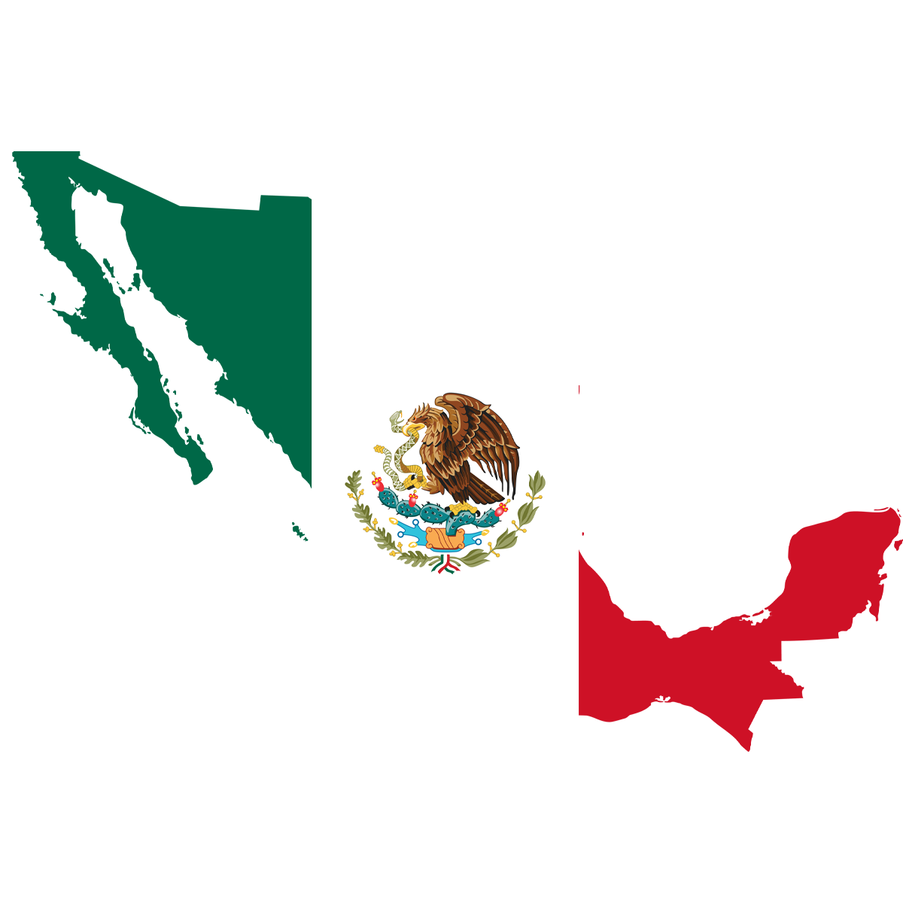

Learn Spanish Online From Native Teachers
Grow your confidence in Spanish conversation, grammar and reading with live, online classes, professional teachers and a schedule that suits you.
Get started

Truly Experience Foreign Countries
Travel around the world and meet millions of spanish speaking perople

Mexcio
+130 million speakers
Colombia
+50 million speakers
Spain
+47 million speakers

Argentina
+45 million speakers